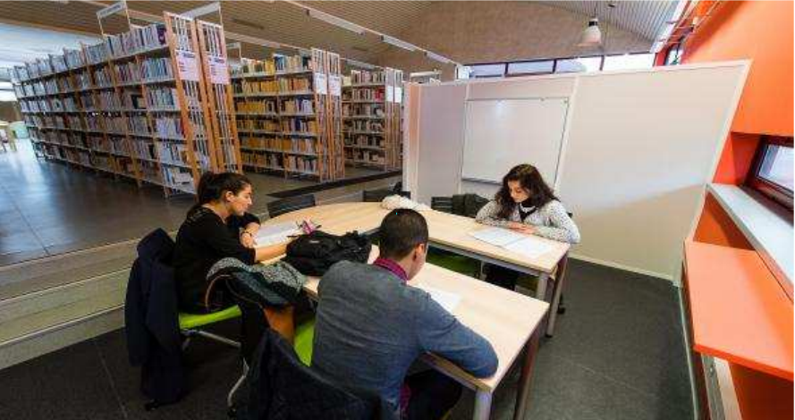

En plus des cours, vous disposez d’une bibliothèque universitaire sur chacun des pôles, avec des horaires d’ouverture
étendus, vous offrant des espaces de travail conviviaux et l’accès à des ressources imprimées et numériques. Des
espaces pour les travaux de groupes et du matériel dédié aux personnes handicapées (loupes, logiciel adaptés etc.)
sont à votre disposition.
Profitez de votre passage à l’université pour découvrir de nouveaux univers avec le Service Vie Culturelle et
Associative qui vous propose des cycles de films, des concerts, des spectacles de jeunes compagnies ou d’artistes plus
confirmés, des expositions, des ateliers artistiques (théâtre, radio, danse, photographie...) Plusieurs lieux et
équipements peuvent devenir vôtres pour développer vos talents (La Ruche : salle de spectacle de la maison de
l’étudiant, une salle de répétition, des pianos, un labo photo…)
Vous pourrez également vous investir dans une association étudiante.
Le Service Universitaire des activités physiques et sportives (SUAPS) vous propose 35 activités sportives par semaine sur les différents sites de l’université et organise tournois
intersites, fête internationale du sport, stage de découverte d’activité de pleine nature, spectacle, danse et arts du cirque.
Les Relations Internationales vous proposent différents programmes de séjours d’études à l’étranger pour un semestre ou une année universitaire dans une université
partenaire, ou de réaliser un stage à l’étranger dans le cadre de votre cursus.
Le Service Universitaire de Médecine Préventive et de Promotion de la Santé (SUMPPS) vous permet de bénéficier de services gratuits et confidentiels : visites médicalisées
de prévention (santé globale, conseils en vaccination, nutrition, aide à la contraception), soutien psychologique pour vous aider et vous accompagner dans vos études,
journées « Don du Sang », actions de prévention et de sensibilisation (dépistages visuel, auditif et diabétique). Des Assistantes sociales apportent « Écoute et Conseils » aux
étudiants afin de remédier à leurs difficultés (administratives, financières ou personnelles)
Le Service d’Accueil, d’Orientation et d’Insertion Professionnelle (SAOIP) vous accompagne dans votre choix d’études et d’orientation et dans la construction de votre projet
professionnel. En lien avec le monde professionnel, le SAOIP multiplie les rencontres entre les étudiants et les entreprises lors de conférences, ateliers, forums de l’emploi
et vous aide dans la rédaction de votre CV et lettre de motivation.